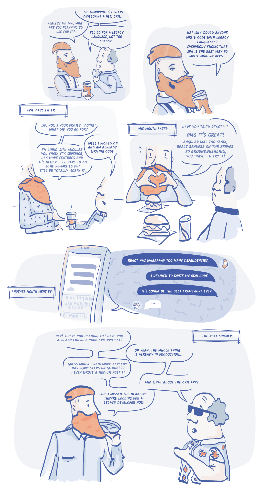

Atributos
atributos de imagen
atributos de botones
atributos booleanos
el input anterior contiene un "placeholer" para colocar un texto temporal, "autofocus" permite focar el input al cargar la página usados comunmente en etiquetas input, textarea y button.
el atributo "checked" puede usarse en los input tipo "checkbox" y "radio" con esto el el checkbox o el radio aparecera seleccionado por defecto al cargar la pagina.